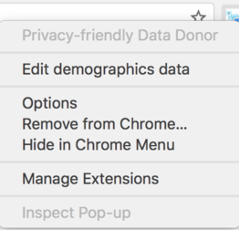
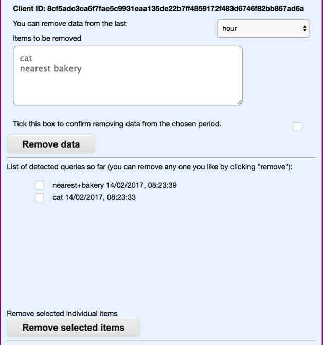

Internal Experiment Tasks
We're conducting an internal experiment to validate Privacy-friendly Data Donor (PDD) the extension's operation. Please complete the tasks as defined in the right column.
Task 1. Install Chromium browser
- To take part in the experiment, please download Chromium Browser from here.
- Install and open Chromium and visit this site.
Task 2. Install the PDD extension
- To install the extension, please right click on this link
- Save the extension on your computer (Download Link in Chromium; Save Link As in Google Chrome)
- Visit the browser's Extension page in your browser, available from the Settings. Alternatively, type chrome://extensions in the URL bar - installed extensions will be listed there.
- Drag-and-drop the saved extension from your computer's disk to the chrome://extensions page. (The extension is now installed).
- Immediately after installing the extension, you will be taken to an informational tab. Please read it carefully.
- You will have the option to provide demographic data. Please do so (after you do this, the information tab should automatically close).
Task 3. Using the extension
- Visit www.google.com (link opens in new tab).
- Following any of the searches below, please do not click on links marked as "Ad"
- Search for Holiday.
- Click on a link found on the first page with Google search results. Once the page has loaded, please click the browser back button.
- Open another link, but in new browser tab.
- Now search for hospital.
- Click on a link on the first page with results. Once the page has loaded, hit the back button.
- Open another link in new browser tab, as in previous case.
- Please repeat the previous steps for each of the following searches:
- back pain
- mental health
- carrot kitty
- blood pressure
- protein intake
- vaccinations nhs
- xbox christmas pack
- weather
Task 4. Using the extension (preferences)
- This is the PDD extension button. It’s visible in your browser nearby the address bar.
- To open PDD extension menu, please right-click the button.
- Right clicking it opens the following menu. 
- In the following tasks, you will work with the PDD menu visible on the picture above.

Task 4.1. Edit demographics data
- Please right-click the PDD extension button to open the menu.
- Please click on edit demographics data .
- The demographics data tab should be prefilled with data you have included while installing the PDD extension (please see Task 2 if unsure).
- Let’s test how editing works. Please change your postal code. Click save.
- Save the new data.
- The demographics page will automatically close after saving and updating new data.
Task 5. Select Options Tab (during a test session)
- Please right-click the PDD extension button to open the menu.
- Please navigate to Options. You can also open Options tab directly by left-clicking on the PPD extension button.
- Options tab should look as pictured below: 
- Here, in the Options tab, you can see all data held by the extension. You can also remove some of it.
- You can also see here some additional information, for example: search queries so far detected by the extension and the Queries of Interest we use in Group Mode.
- Select the Client ID, copy it, save it and keep it somewhere on your computer. You will be asked to provide the ID in a review feedback form after the experiment (possibly a few days later, too).
- Please wait for the instructions to follow as Lukasz now makes his work on the server. While doing so, Lukasz arranges different private aggregation sessions with varying group sizes.
- When Lukasz says it’s over, move to another task.
Task 6. Test the extension’s operation after a browser restart
- Close the web browser.
- Re-open the web browser
- Please wait for the instructions to follow as Lukasz now makes his work on the server. While doing so, Lukasz arranges different private aggregation sessions with varying group sizes.
- When Lukasz says it’s over, move to the next task.
Task 7. Remove data
- Right-click the PDD button and go to the menu.
- Please select Options tab.
- In Options tab, please click on one of the found items. Click on the Remove selected items. Verify if the item has been removed.
- In Options tab, select Remove data from the last - select hour. The extension should display data searcher for in the last hour. Select Remove data.
Task 8. Remove the extension
- To remove the PDD extension from your browser, please right-click the PDD icon and choose Remove from Chrome
- Extension does not exist anymore.